Codzienna obsługa w domu
- pełny pilot i sterowanie tunerem
- listy kanałów, wyszukiwanie i przełączanie TV
- EPG, picony i pamięć podręczna
- podgląd kanału, SNR, AGC, BER i głośności
- działanie w lokalnej sieci Wi-Fi/LAN
Nowe wydanie by Paweł Pawełek
Android • Enigma2 • OpenWebif • Free / Pro
Sterowanie tunerem Enigma2, listy kanałów, EPG, picony oraz streaming kanałów SAT i IPTV na telefonach i tabletach z Androidem.

Najnowsze wydanie
72fa2de85a53140706a58088e1cb981d422d28bbc460460b5f5553393c1892a3c32098045e33ce2b3b2462b55fddeefeab398df74d098ea5937c6dd48701540fJedna aplikacja zawiera oba warianty. Po instalacji działa jako wersja Free, a funkcje Pro można odblokować rocznym kluczem przypisanym do urządzenia.
| Funkcja | Free | Pro |
|---|---|---|
| Pilot i sterowanie tunerem | ✓ | ✓ |
| Listy kanałów, EPG i picony | ✓ | ✓ |
| Streaming SAT i IPTV | — | ✓ |
| ZeroTier / VPN | — | ✓ |
| Transkodowanie 8002 i stabilizacja | — | ✓ |
Przed instalacją 1.4.6 zalecane jest odinstalowanie poprzedniego wydania. Zapobiega to konfliktom podpisu, ustawień i pamięci podręcznej.
Otwórz pobrany plik. W razie komunikatu Play Protect rozwiń szczegóły i wybierz instalację mimo ostrzeżenia.
Podaj adres tunera, port, protokół oraz - gdy jest wymagane - login i hasło.
Po połączeniu przejdź do zakładki Kanały i wybierz Pobierz od nowa.
APK jest instalowany spoza Google Play, dlatego Android może wyświetlić ostrzeżenie. Pobieraj aplikację wyłącznie z oficjalnej publikacji autora. Nie trzeba wyłączać całej ochrony Play Protect.
W wersji Free przycisk TV przełącza kanał na tunerze. Przycisk streamingu pozostaje zablokowany do aktywacji Pro.
| Ustawienie | Typowa wartość | Zastosowanie |
|---|---|---|
| OpenWebif HTTP | 80 | Sterowanie i dane tunera |
| Strumień TV | 8001 | Pełna jakość w sieci LAN |
| Transkodowanie | 8002 | Opcjonalnie w Pro, gdy tuner i obraz obsługują tę funkcję |
| Profil lokalny | Wi-Fi / LAN | Dostępny w Free i Pro |
| Profil zdalny | ZeroTier / VPN | Dostępny w Pro |
Samo zwiększenie bufora nie zastąpi odpowiedniej przepustowości łącza.
Pro odblokowuje streaming SAT/IPTV, wybór odtwarzacza, ZeroTier/VPN, port 8002 i stabilizację. Wpłata może zostać wykonana przez Revolut lub BuyCoffee. Przy innej walucie można wpłacić równowartość 30 PLN przez Revolut.
Nie publikuj ich razem. Licencja jest przypisana do jednego urządzenia. Nowy telefon generuje inny kod i wymaga osobnej licencji.
Klucz jest przygotowywany po weryfikacji wpłaty - w ciągu 24 godzin, zwykle szybciej. Gdy program pocztowy nie jest skonfigurowany, aplikacja pozwala skopiować komplet zgłoszenia i wysłać je ręcznie.
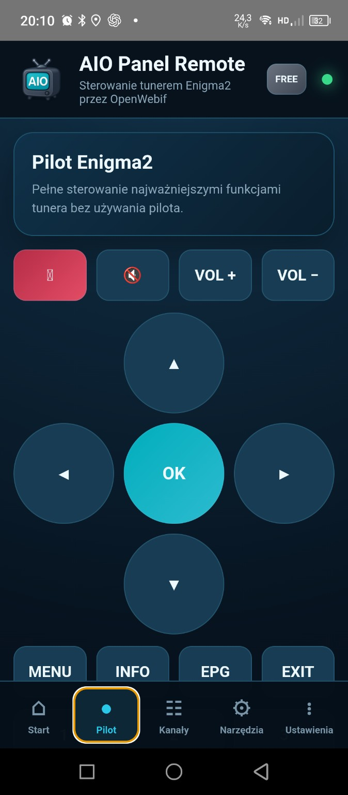

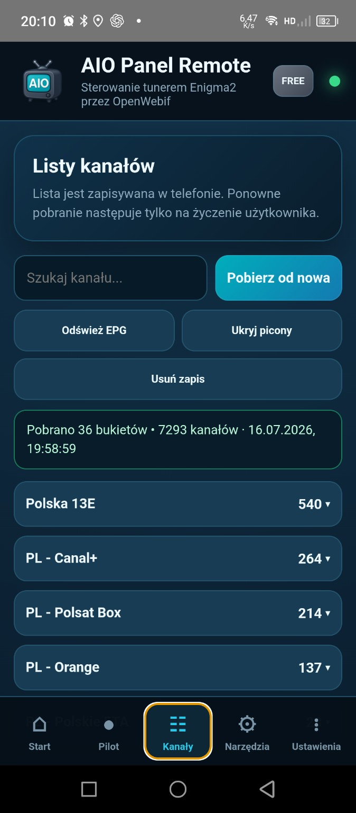
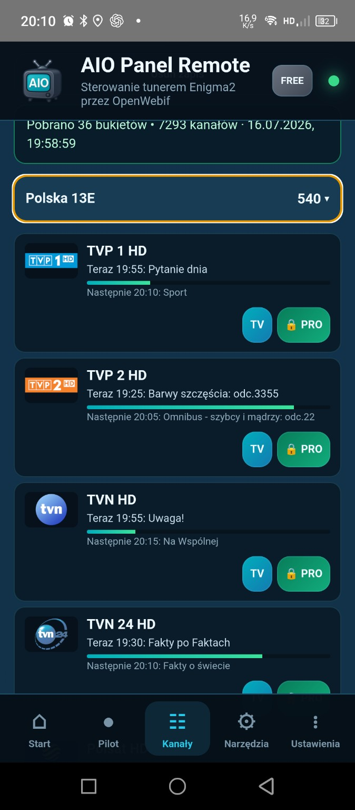
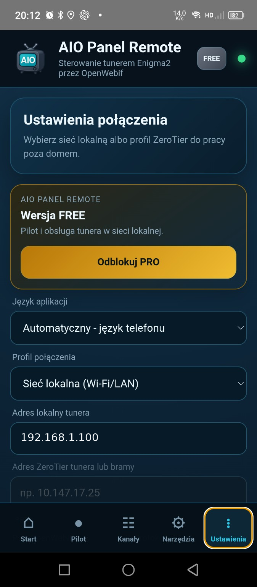
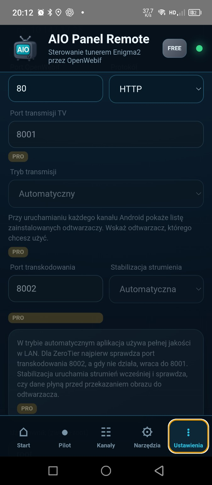
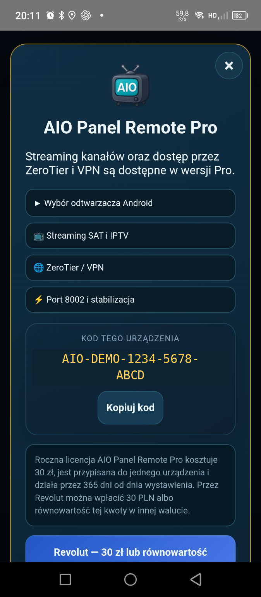
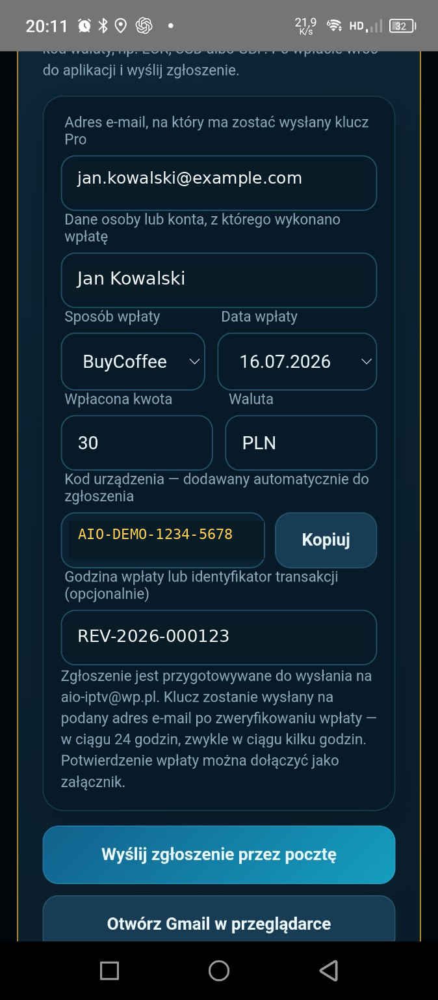
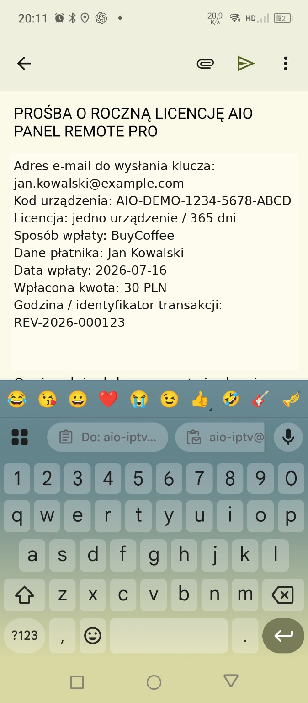
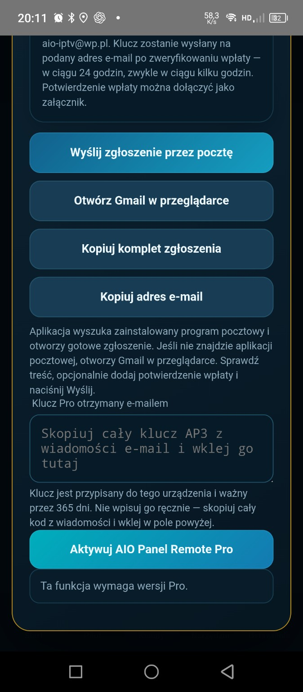

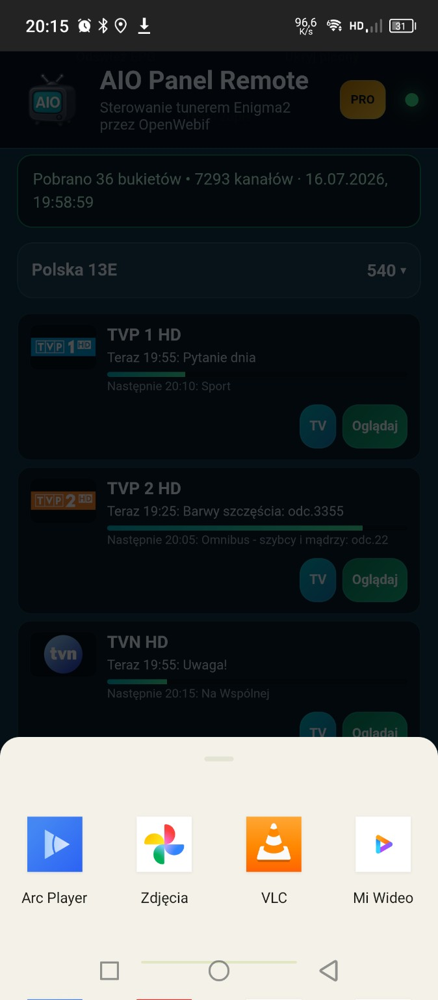
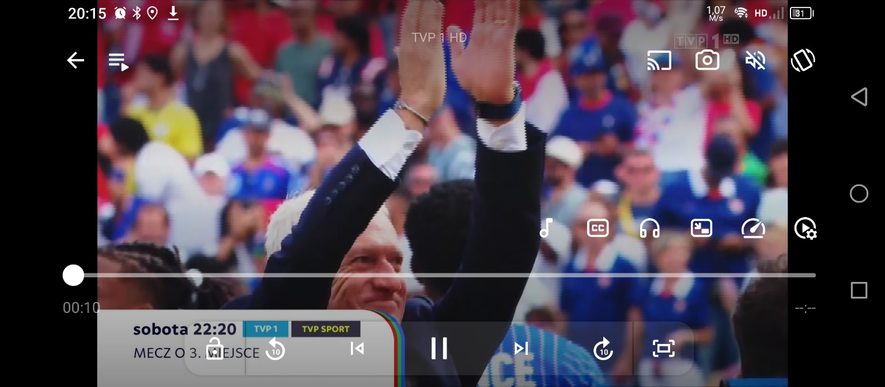
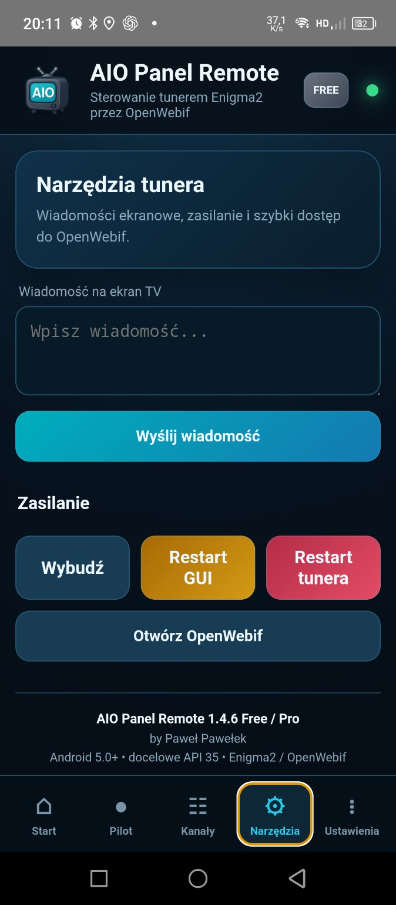
Sprawdź IP, port, protokół OpenWebif oraz login i hasło. W profilu LAN telefon i tuner muszą być w tej samej sieci.
Wybierz Pobierz od nowa, następnie Odśwież EPG. Sprawdź również, czy picony istnieją na tunerze.
Zainstaluj program obsługujący transmisje HTTP/TS i wybierz go z listy Androida po naciśnięciu Oglądaj.
Sprawdź członkostwo urządzeń w tej samej sieci, ich zatwierdzenie oraz osiągalność adresu tunera lub bramy.
Wersja: 1.4.6 Free / Pro
Wymagania: Android 5.0+, tuner Enigma2 i OpenWebif
Autor: by Paweł Pawełek
Kontakt: aio-iptv@wp.pl